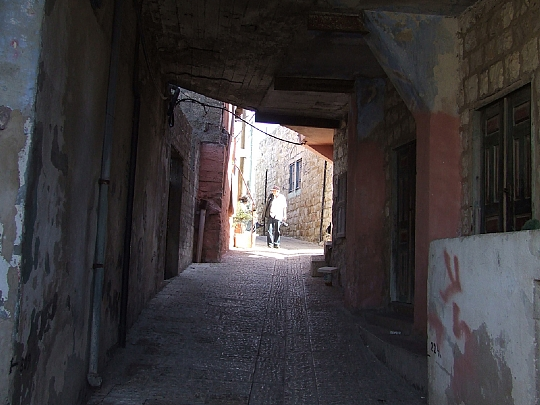
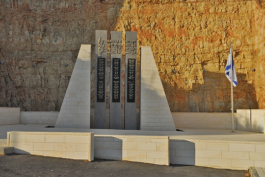
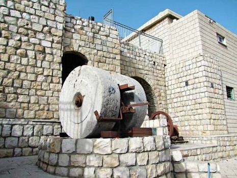
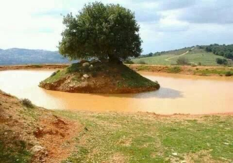
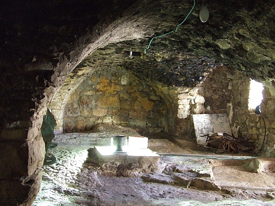
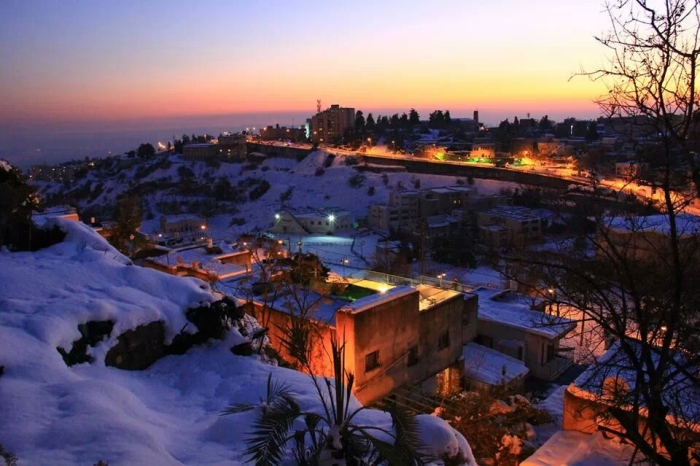
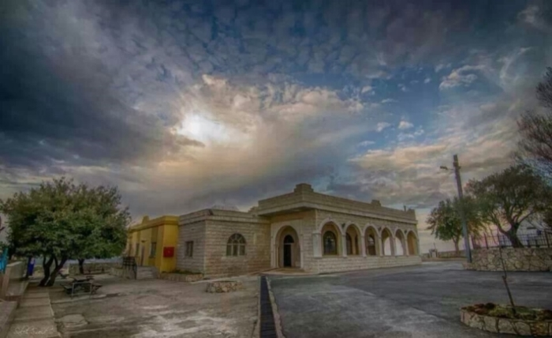

- 
- 
- 
- 
- 
- 
- 
על בית ג'ן
בית ג'אן הוא הכפר הגבוה בארץ ומהגדולים בכפרי הדרוזים. הוקם על פסגת ההר ונמצא בלב שמורת הטבע הר מירון בגליל העליון. חלקם של הבתים בכפר בנויים בגובה 1020-1030 מ' על הר צפריר והר הארי כך שבחורף הכל מתכסה במעטה שלג צחור . הכפר מונה כ 11100 תושבים שכלל האוכלוסייה הינם מהעדה הדרוזית ,בעבר רוב התושבים היו שומרי מסורת ועיקר התעסוקה הייתה בחקלאות , תעשיות שמן,גידול גפנים ופלחה בחיטה ,על אלה מעידים עשרות הגתות סביב הכפר ,בתי הבד ואבני הרחיים שנמצאות כמעט בכל בית עתיק.
על עצמי ועל האתר
אני תמיר אבו סלאח בן 24 מבית ג'ן, סטודנט להנדסת תוכנה בבית הספר להנדסה ועיצוב שנקר.
בניתי את האתר הזה במסגרת קורס פיתוח אתרי אינטרנט, באתר תוכלו לקרוא קצת על הרקע וההיסטוריה של בית ג'ן וכן גם קצת על התיירות בכפר,
בין אם זה בתי אירוח ומסעדות או טיולים ואטרקציות.
אשמח מאוד לקבל ביקורות גם טכניות וגם על התוכן, תוכלו לצור איתי קשר בלחיצה על "צור קשר" פה באתר.
תודה.